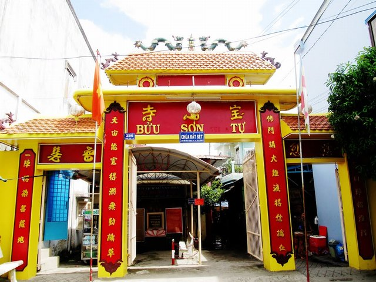
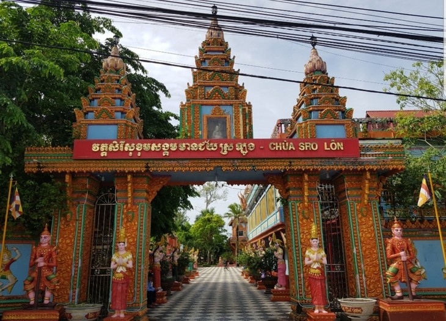
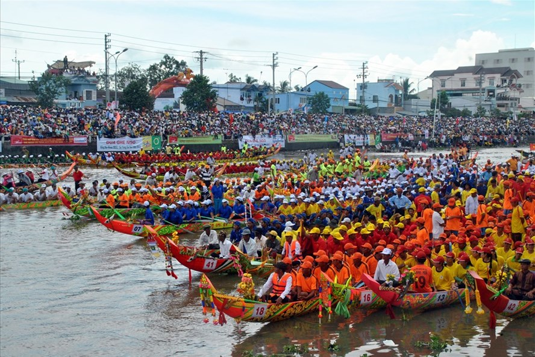
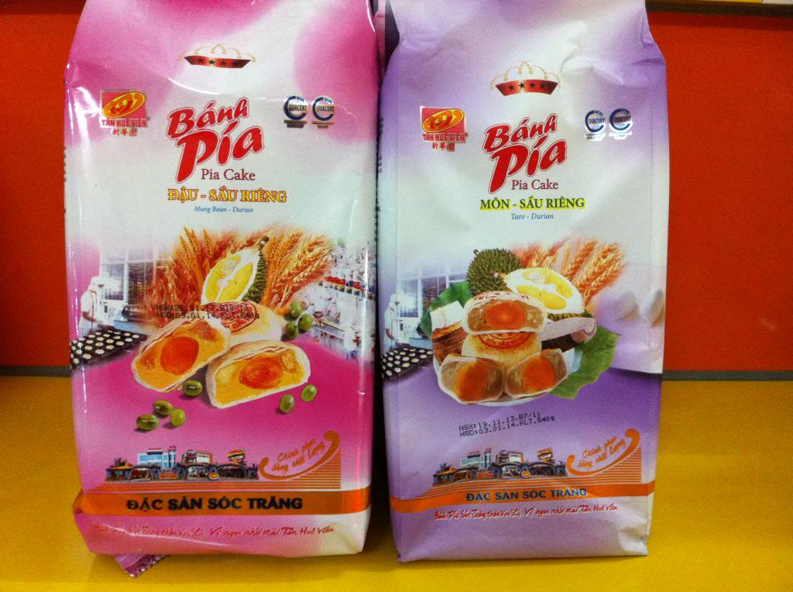

TỈNH SÓC TRĂNG
Vùng đất giàu bản sắc văn hóa Khmer, nổi tiếng với những ngôi chùa độc đáo, các lễ hội truyền thống đặc sắc và nền ẩm thực hấp dẫn.
Lịch sử hình thành tỉnh Sóc Trăng
Sóc Trăng là một trong những địa phương lâu đời ở khu vực Đồng bằng sông Cửu Long. Tên gọi Sóc Trăng bắt nguồn từ tiếng Khmer "Srok Kh'leang", có nghĩa là "xứ có kho bạc". Đây là vùng đất sinh sống lâu đời của cộng đồng người Khmer, sau đó có thêm người Kinh và người Hoa đến định cư, tạo nên sự giao thoa văn hóa đặc sắc.
Trong quá trình phát triển, Sóc Trăng trở thành trung tâm kinh tế, thương mại và văn hóa quan trọng của khu vực ven biển Nam Bộ. Địa phương nổi bật với hệ thống chùa Khmer cổ kính, các lễ hội truyền thống và nhiều làng nghề nổi tiếng.
Ngày nay, Sóc Trăng đang phát triển mạnh về du lịch văn hóa, du lịch tâm linh và du lịch sinh thái, thu hút hàng triệu lượt khách tham quan mỗi năm.

Văn hóa Khmer
Sóc Trăng được xem là trung tâm văn hóa Khmer lớn nhất khu vực Đồng bằng sông Cửu Long. Người Khmer sinh sống tập trung tại nhiều địa phương trong tỉnh và vẫn bảo tồn được những nét văn hóa, tín ngưỡng và phong tục tập quán truyền thống.
Các ngôi chùa Khmer với kiến trúc độc đáo cùng các lễ hội dân gian đã góp phần tạo nên bản sắc riêng cho Sóc Trăng. Đây là yếu tố thu hút đông đảo du khách trong và ngoài nước đến tham quan, tìm hiểu văn hóa địa phương.

Chùa Dơi
Chùa Dơi là một trong những ngôi chùa Khmer nổi tiếng nhất Việt Nam. Chùa có tên gọi này vì trong khuôn viên có hàng ngàn con dơi lớn sinh sống tự nhiên trên các tán cây cổ thụ.
Công trình mang đậm nét kiến trúc Khmer với những hoa văn chạm khắc tinh xảo, mái chùa cong vút và màu sắc rực rỡ. Đây là điểm đến không thể bỏ qua khi đến Sóc Trăng.
Xem chi tiết
Chùa Đất Sét
Chùa Đất Sét là công trình độc đáo nổi tiếng bởi hàng nghìn tượng Phật, linh vật và bảo tháp được chế tác hoàn toàn bằng đất sét. Đây là một trong những điểm tham quan tâm linh đặc sắc nhất của Sóc Trăng.
Đặc biệt, trong chùa còn có những cây nến khổng lồ được công nhận là một trong những cây nến lớn nhất Việt Nam. Sự sáng tạo và công phu của nghệ nhân đã tạo nên nét độc đáo riêng biệt cho ngôi chùa này.
Xem chi tiết
Chùa Chén Kiểu
Chùa Chén Kiểu là một trong những ngôi chùa Khmer nổi tiếng nhất miền Tây Nam Bộ. Điểm đặc biệt của công trình nằm ở các mảng tường và cột được trang trí bằng hàng ngàn mảnh chén, đĩa, bát sứ ghép lại với nhau.
Kiến trúc độc đáo cùng không gian yên bình khiến nơi đây trở thành điểm tham quan hấp dẫn đối với du khách yêu thích nghệ thuật và văn hóa Phật giáo Nam Tông Khmer.
Xem chi tiết
Lễ hội Oóc Om Bóc
Oóc Om Bóc là một trong những lễ hội truyền thống quan trọng nhất của người Khmer Nam Bộ. Lễ hội thường được tổ chức vào dịp rằm tháng 10 âm lịch nhằm tạ ơn thần Mặt Trăng sau một mùa vụ bội thu.
Trong dịp lễ hội, người dân tổ chức nhiều hoạt động văn hóa, nghệ thuật và các nghi thức truyền thống thu hút đông đảo khách du lịch.

Đua Ghe Ngo
Đua ghe Ngo là hoạt động nổi bật nhất trong lễ hội Oóc Om Bóc. Những chiếc ghe dài với hàng chục tay chèo thi đấu sôi nổi trên sông, tạo nên không khí hào hứng và đầy màu sắc.
Đây không chỉ là môn thể thao truyền thống mà còn là biểu tượng đoàn kết cộng đồng của người Khmer Nam Bộ.

Đặc sản Bánh Pía
Bánh Pía là đặc sản nổi tiếng nhất của tỉnh Sóc Trăng. Bánh có lớp vỏ nhiều tầng mềm xốp, nhân đậu xanh, sầu riêng, trứng muối và nhiều loại hương vị hấp dẫn.
Đây là món quà quen thuộc mà du khách thường mua về sau mỗi chuyến tham quan Sóc Trăng.
Điểm nổi bật của Sóc Trăng
| Địa điểm/Lễ hội | Đặc điểm nổi bật |
|---|---|
| Chùa Dơi | Ngôi chùa Khmer nổi tiếng có hàng nghìn con dơi |
| Chùa Đất Sét | Công trình nghệ thuật bằng đất sét độc đáo |
| Chùa Chén Kiểu | Trang trí bằng mảnh chén, đĩa sứ |
| Oóc Om Bóc | Lễ hội truyền thống của người Khmer |
| Đua Ghe Ngo | Sự kiện văn hóa thể thao nổi tiếng |
| Bánh Pía | Đặc sản nổi tiếng của Sóc Trăng |
Hình ảnh nổi bật của Sóc Trăng